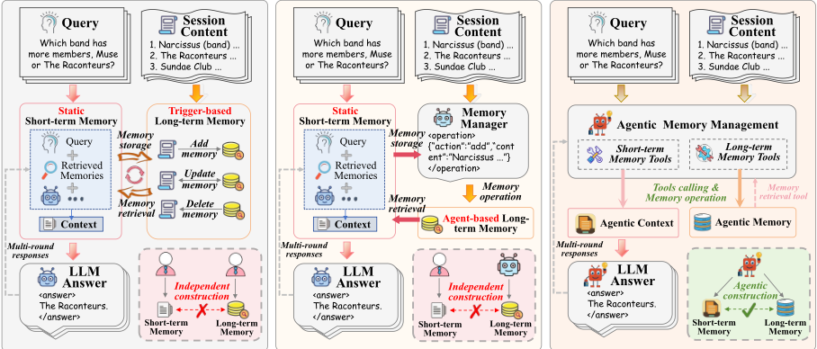
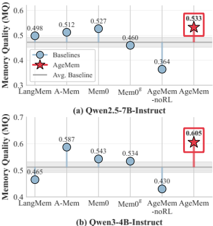
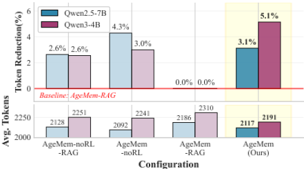
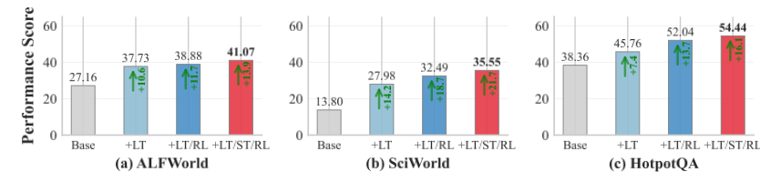
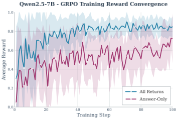
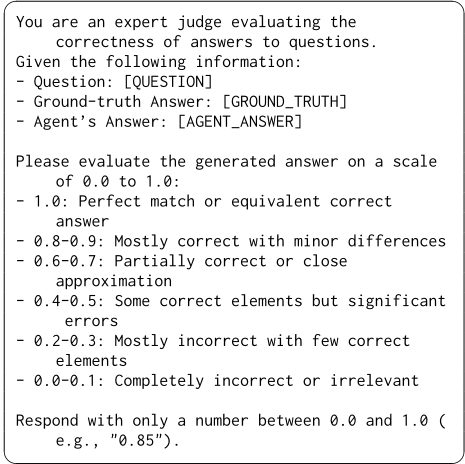
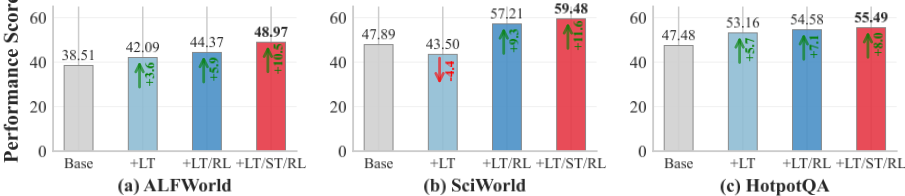
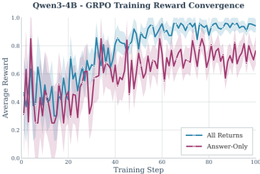

Agentic Memory：为 LLM Agent 学习统一的长时与短时记忆管理
LLM Agent 在长程任务中受限于有限上下文窗口，而现有工作把长期记忆（LTM）与短期记忆（STM）当作独立模块，依赖启发式规则或辅助专家模型，难以端到端优化。AgeMem 将 LTM 的 ADD/UPDATE/DELETE 与 STM 的 RETRIEVE/SUMMARY/FILTER 六种记忆操作以工具形式纳入 Agent 统一动作空间，由模型自主决定存取、压缩与丢弃时机，并用三阶段渐进式 RL（LTM 构建→STM 抗干扰→联合协调）配合 step-wise GRPO 解决记忆操作导致的稀疏不连续奖励。在 ALFWorld、SciWorld、PDDL、BabyAI、HotpotQA 五个长程基准上，AgeMem 在 Qwen2.5-7B-Instruct 与 Qwen3-4B-Instruct 上分别取得 41.96% 与 54.31% 平均成绩，较最强基线 Mem0/A-Mem 平均提升 4.82 与 8.57 个百分点，记忆质量（MQ 0.533/0.605）与 token 效率（较 RAG 变体降 3.1%~5.1%）同步改善。其"记忆操作工具化 + 统一动作空间 + 结构化系统提示"设计可直接借鉴到团队的 Agent 记忆与上下文管理，但完整收益依赖 RL 微调，需评估以纯提示工程方式复用时的效果折损。
LLM Agent 在长程多步推理任务中受限于有限上下文窗口，记忆管理成为关键瓶颈。现有工作将长期记忆（LTM）与短期记忆（STM）作为独立组件分别处理：STM 侧依赖 RAG 或周期性摘要等预定义调度与启发式规则，LTM 侧分为 trigger-based 与 agent-based 两类范式、多依赖手工规则或辅助专家模型，两者独立优化后再临时拼合，导致记忆构建碎片化、系统复杂度高、无法端到端优化。论文归纳三大挑战：LTM/STM 功能异构的协调（C1）、训练范式不匹配——记忆操作产生碎片化不连续轨迹，与标准 RL 的连续轨迹假设冲突（C2）、以及部署时不依赖外部专家 LLM 的成本约束（C3）。
提出 AgeMem 统一记忆管理框架：(1) 工具化记忆操作——将 LTM 的 ADD/UPDATE/DELETE 与 STM 的 RETRIEVE/SUMMARY/FILTER 六种操作以工具接口纳入 Agent 动作空间，RETRIEVE/FILTER 基于 embedding 余弦相似度（FILTER 默认阈值 0.6），配合定义 <think>/<tool_call>/<answer> 结构化输出格式的系统提示；(2) 三阶段渐进式 RL 课程——Stage 1 从闲聊式上下文中构建 LTM，Stage 2 重置短期上下文并注入 DISTRACTORGEN 生成的干扰消息以训练 STM 过滤与压缩，Stage 3 联合利用持久化 LTM 与受控上下文完成最终任务，LTM 跨阶段持久、STM 阶段间重置以防信息泄漏；(3) step-wise GRPO——将终端奖励组归一化后的优势广播至轨迹所有步骤，实现跨阶段长程信用分配；(4) 复合奖励——任务完成（LLM judge）+ 上下文管理（压缩效率/预防性操作/信息保留）+ 记忆管理（存储质量/维护/语义相关）+ 惩罚项（轮次超限、上下文溢出）。基于 Agentscope 构建 Agent，用 Trinity 框架做 RL 微调，基座为 Qwen2.5-7B-Instruct 与 Qwen3-4B-Instruct。
五个基准（ALFWorld、SciWorld、PDDL、BabyAI、HotpotQA）平均：Qwen2.5-7B-Instruct 达 41.96%、Qwen3-4B-Instruct 达 54.31%，较 no-memory 基线相对提升 49.59% 与 23.52%
较最强基线 Mem0 与 A-Mem 平均提升 4.82 与 8.57 个百分点；RL 训练较 AgeMem-noRL 贡献 8.53 与 8.72 个百分点
长期记忆质量 MQ 达 0.533（Qwen2.5-7B）与 0.605（Qwen3-4B），为所有对比方法中最高
STM 工具管理较 RAG 变体降低 prompt token：Qwen2.5-7B 上 2,117 vs 2,186（降 3.1%），Qwen3-4B 上 2,191 vs 2,310（降 5.1%）
消融：仅加 LTM 工具较基线提升 +10.6%/+14.2%/+7.4%，完整系统提升 +13.9%/+21.7%/+16.1%；STM 工具在 SciWorld 与 HotpotQA 上分别带来 +3.1% 与 +2.4%
奖励函数消融：All-Returns 较 Answer-Only 在 Qwen2.5-7B 上 LLM-as-a-Judge 0.544 vs 0.509、MQ 0.533 vs 0.479；Qwen3-4B 上 MQ 0.605 vs 0.415
鲁棒性：FILTER 阈值在 [0.4, 0.8] 内性能稳定；Stage 2 干扰消息数量 N 在 3~5 间性能稳定、N=7 轻微下降
相对已有工作的三点区别：(1) 首次把 LTM 与 STM 管理统一为单一可学习策略并端到端训练——已有 RL 记忆 Agent 通常一次只优化记忆的一个方面，把检索、摘要或短期上下文处理当作固定启发式或单独调优模块，早期存储决策与后期推理行为松耦合；(2) 记忆操作直接内嵌于 Agent 策略本身，无需辅助专家 LLM，降低推理成本与系统复杂度，区别于 LangMem、A-Mem、Mem0、Zep 等依赖预定义结构或启发式更新规则的方案；(3) 提出 step-wise GRPO 与三阶段课程（信息暴露与任务执行时间分离 + 延迟奖励），解决记忆操作导致的稀疏、不连续奖励下的长程信用分配，且课程不绑定 QA 式监督、可推广到其他工具使用场景。
相关度级别：high
命中能力域：3.1 上下文工程与记忆 | 3.3 Agent 架构与工具使用 | 3.5 评测与可靠使用
理由：直接命中团队 3.1 域核心技术：论文主题就是 Agent 记忆系统与上下文窗口管理/压缩，统一管理 LTM 与 STM、主动摘要压缩、噪声过滤、语义检索，并给出与静态 RAG 的对照实验（token 降 3.1%~5.1% 且性能更优）；同时"记忆操作工具化、纳入统一动作空间 + 结构化 <think>/<tool_call>/<answer> 系统提示"直接命中 3.3 域的工具调用与 Agent harness 设计；其 MQ 记忆质量评测方法与 token 效率分析对 3.5 域亦有借鉴价值。需注意：论文的完整收益（较 noRL 提升 8.5 个百分点以上）依赖对模型本身做 RL 微调（step-wise GRPO），而团队不做模型训练，落地时应重点借鉴其工具接口与 schema 设计、系统提示结构、三阶段评测场景构造与 MQ 评测方法，而非复现训练流程。
建议动作：深入精读并做内部分享
arXiv:2601.01885v3 [cs.CL] 23 Jul 2026
Agentic Memory：为大语言模型 Agent 学习统一的长期与短期记忆管理
Yi Yu 1,2，Liuyi Yao 2,†，Yuexiang Xie 2，Qingquan Tan 1，Jiaqi Feng 1，
Yaliang Li 2 和 Libing Wu 1,†
1 武汉大学国家网络安全学院 2 阿里巴巴集团
{yui1212,tanqingquan,jiaqiFeng,wu}@whu.edu.cn
{yly287738,yuexiang.xyx,yaliang.li}@alibaba-inc.com
†通讯作者
大语言模型（LLM）智能体由于上下文窗口有限，在长程推理方面面临根本性限制，这使得有效的记忆管理至关重要。现有方法通常将长期记忆（LTM）与短期记忆（STM）作为相互独立的组件来处理，并依赖启发式方法或辅助控制器，这限制了适应性和端到端优化。本文提出 Agentic Memory（AgeMem），这是一个将 LTM 与 STM 管理直接集成到智能体策略中的统一框架。AgeMem 将记忆操作以基于工具的动作形式呈现，使 LLM 智能体能够自主决定对信息进行存储、检索、更新、总结或丢弃的内容与时机。为了训练这种统一的行为，我们提出了一种三阶段渐进式强化学习策略，并设计了逐步 GRPO（step-wise GRPO）来应对由记忆操作引起的稀疏且不连续的奖励问题。在五个长程基准测试（benchmark）上的实验表明，AgeMem 在多个 LLM 骨干模型上始终优于强大的记忆增强基线，实现了更优的任务性能、更高质量的长期记忆以及更高效的上下文使用。
在涉及多步推理和复杂工作流的长程智能体任务（Chang et al., 2024）中，大语言模型（LLM）智能体的效能在根本上受限于其在任一给定时刻能够关注到的信息，我们将这些信息统称为智能体的记忆（Xiong et al., 2025; Goodyear et al., 2025）。记忆通常分为两类：长期记忆（LTM），用于持久地存储用户或任务特定的知识（Zhong et al., 2024; Jiang et al., 2024）；以及短期记忆（STM），由当前输入上下文中所包含的信息构成（Wu et al., 2025b; Gao et al., 2025b）。高质量的 LTM 支持对积累知识的高效检索，而有效的 STM 管理则能减少冗余并保留显著的上下文。二者共同缓解了有限上下文窗口的局限，因此对它们的联合管理对于提升智能体在复杂推理场景下的性能至关重要。
然而，现有研究大多将 LTM 和 STM 视为相互独立的组件。STM 通常通过检索增强生成（RAG）来增强（Pan et al., 2025b），例如 MainRAG（Chang et al., 2025）和 ReSum（Wu et al., 2025a），它们通过外部检索或周期性总结来扩展可用上下文。尽管这些方法在某些任务中有效，但它们严重依赖预定义的调度或启发式规则，可能导致不常出现却至关重要的细节被忽略，同时引入不必要的噪声（Ma et al., 2025; Dong et al., 2025）。相比之下，LTM 管理则沿着另一条路线发展，通常被划分为基于触发（trigger-based）的范式（Kang et al., 2025; Wang and Chen, 2025; Wang et al., 2025c; Chhikara et al., 2025）和基于智能体（agent-based）的范式（Yan et al., 2025; Hu et al., 2025; Xu et al., 2025）。前者在预定义的时刻执行固定的记忆操作，而后者则引入专门的记忆管理器来决定存储什么以及如何存储。尽管提供了更大的灵活性，大多数方法仍然依赖手工设计的规则或辅助专家模型，这限制了适应性并增加了系统复杂性（Xiong et al., 2025）。
因此，LTM 和 STM 通常被视为相互分离且松耦合的模块。如图 1 所示，现有架构一般遵循两种模式：（a）静态 STM 与基于触发的 LTM，或（b）静态 STM 与基于智能体的 LTM。在这两种设置中，两个记忆系统均被独立优化，之后再以临时拼凑的方式组合起来，导致记忆构建碎片化，且在

（b）静态 STM + 基于智能体的 LTM
长程推理任务中表现欠佳。因此，统一 LTM 和 STM 的管理仍然是一个必要但很大程度上尚未被探索的挑战。
然而，实现统一的记忆管理面临三个根本性挑战。（C1）功能异构性协调：LTM 与 STM 服务于不同但互补的目的：LTM 决定存储、更新或丢弃哪些内容，而 STM 则管理从活动上下文中检索、总结或移除哪些内容（Zhang et al., 2025b）。挑战在于设计一种能够协同编排二者交互的统一机制。（C2）训练范式不匹配：现有的强化学习（RL）框架对这两种记忆类型采用了截然不同的训练策略（Ma et al., 2024）。以 LTM 为重点的训练通常利用交互之前即可获得的会话级信息，而 STM 训练则通常注入干扰项来模拟长程上下文（Sun et al., 2024）。此外，标准 RL 假设轨迹连续且奖励稳定，这与记忆操作所产生的本质上碎片化且不连续的经验相冲突（Wu et al., 2025a），使得端到端优化尤为困难。（C3）实际部署约束：许多 Agent 系统依赖一个辅助的专家 LLM 来进行记忆控制，这显著增加了推理成本和训练复杂度。如何在不依赖外部专家模型的情况下将统一记忆管理直接集成到 Agent 中，仍然是一个悬而未决的问题。
为应对这些挑战，我们提出了 Agentic Memory（AgeMem），这是一个联合管理 LTM 与 STM 的统一框架，如图 1（右）所示。与以往将记忆视为外部组件的设计不同，AgeMem 将这两种记忆类型直接集成到 Agent 的决策过程中。通过统一的基于工具的接口，LLM 自主调用并执行针对 LTM 与 STM 的记忆操作。此外，我们设计了一种三阶段渐进式 RL 策略：模型首先习得 LTM 存储能力，随后学习 STM 上下文管理，最终在完整任务设置下协调这两种记忆形式。为解决各训练阶段中经验碎片化的问题，我们设计了逐步 Group Relative Policy Optimization（GRPO）（Shao et al., 2024），该方法将输出奖励回传至先前的记忆决策，从而缓解了 RL 中稀疏且不连续奖励所带来的挑战。我们在五个长上下文、推理密集型的基准测试（benchmark）上对 AgeMem 进行了评估。全面的结果表明，AgeMem 始终优于强大的基线，验证了统一记忆管理的有效性。
我们的主要贡献如下：
策略，该策略配备逐步 GRPO 机制，从而促进统一记忆管理行为的有效端到端学习。
长期记忆（LTM）。持久化的 LTM 对于在长时程中运行的基于 LLM 的 Agent 至关重要 (Wang et al., 2025b; Li et al., 2025)。近期工作已探索了用于建模 LTM 的多种架构设计。LangMem (LangChain Team, 2025) 提供了一个支持多种记忆类型的模块化框架，而 A-Mem (Xu et al., 2025) 则采用受 Zettelkasten 启发的设计，将结构化知识单元相互链接以促进记忆巩固。Mem0 (Chhikara et al., 2025) 提出了一种可扩展的抽取-更新流水线，并将其扩展为用于结构化推理的基于图的变体。Zep (Rasmussen et al., 2025) 将记忆表示为时序知识图谱，以实现跨会话和具备时间感知的推理。尽管这些方法在组织和检索信息方面行之有效，但它们在很大程度上依赖于预定义的记忆结构或启发式更新规则。随着记忆的增长，此类设计通常面临系统复杂度上升的问题，并且缺乏用于优先级排序与遗忘的、基于学习的自适应策略。相比之下，我们的工作旨在学习一种自适应记忆策略，使 Agent 能够根据任务需求和长期效用动态决定存储、更新或遗忘哪些内容。
短期记忆（STM）。Agentic LLM 中的 STM 主要涉及上下文选择与检索 (Wang et al., 2024; Jin et al., 2024)。检索增强生成（RAG）(Pan et al., 2025b; Salama et al., 2025; Kagaya et al., 2024) 是主导范式，其通过将检索到的内容注入提示来扩展可用上下文。尽管行之有效，RAG 并不能从根本上防止长时程场景下的上下文爆炸，并且可能引入无关或干扰性的信息。为解决这一问题，ReSum (Wu et al., 2025a) 周期性地将交互历史压缩为紧凑的推理状态，使 Agent 能够在固定的上下文窗口约束之外运行。然而，其摘要调度在很大程度上仍是预定义的，且激进的压缩存在丢弃罕见但至关重要的细节的风险。我们的方法则使 Agent 能够学习何时以及如何检索、总结或过滤上下文，从而在效率与信息保留之间实现更灵活的平衡。
面向大语言模型（LLM）的强化学习。强化学习（RL）已成为提升基于 LLM 的 Agent 的决策与推理能力的有效范式（Yao et al., 2023; Jin et al., 2025; Qian et al., 2025; Chaudhari et al., 2025）。在近期的进展中，GRPO（Shao et al., 2024）基于采样轨迹的相对质量来优化策略，从而省去了对显式价值函数的需求，增强了稳定性。GRPO 及其变体（Gilabert et al., 2025; Wang et al., 2025a）在复杂推理任务中展现出强劲的性能。然而，现有的基于 RL 的系统通常将记忆视为静态或外部组件，因而难以适配与记忆操作相关的不连续且碎片化的轨迹（Yan et al., 2025; Zhang et al., 2025a）。相比之下，我们的工作将 RL 直接融入记忆管理过程，实现了语言生成与记忆操作的统一训练。
相对于基于 RL 的记忆 Agent 的定位。近期工作（Yan et al., 2025; Zhang et al., 2025a）将记忆操作建模为动作，并应用 RL 对其进行优化，这在表面上与我们的方法相似。然而，这些方法通常一次只优化记忆的某一个方面，而将检索、总结或短期上下文处理视为固定的启发式规则或单独调优的模块。因此，早期的存储决策与后续的推理行为之间仅呈松散耦合，学习信号也未能显式地将二者关联起来。AgeMem 则将记忆使用表述为延迟监督下的单一可学习控制问题：对异构记忆动作（既包括持久化的长期记忆（LTM）操作，也包括上下文相关的短期记忆（STM）操作）的统一策略进行端到端训练，使得存储、检索、过滤和总结决策都相对于同一最终任务奖励进行联合优化。
我们提出 Agentic Memory（AgeMem），这是一个统一的记忆框架，使 LLM 智能体能够以端到端的方式自主管理 LTM 和 STM。如图 1（右）所示，AgeMem 通过一组专用工具将记忆管理能力直接集成到智能体中，使模型能够通过三阶段渐进式策略学习统一记忆管理的最优策略。
AgeMem 的统一强化学习（RL）形式化。在每个时间步 t，智能体观察到一个状态 s_t ∈ S，该状态由对话上下文（短期记忆）C_t、长期记忆存储 M_t 以及任务规范 T 组成：s_t = (C_t, M_t, T)。任务规范 T 包括输入查询 q、上下文信息 I_q，以及（仅用于训练的）期望答案 A_q。这一形式化使智能体能够将其决策同时立足于瞬态上下文与持久知识之上。
给定 s_t，智能体从一个既包含语言生成又包含记忆操作的混合动作空间中选择动作 a_t ∈ A。该决策由参数化策略 π_θ 支配，其定义为 π_θ(a_t | s_t) = P(a_t | s_t; θ)，其中 θ 表示 LLM 参数，且 a_t ∼ π_θ(·|s_t)。对于轨迹 τ = (s_1, a_1, ..., s_T, a_T)，累积奖励定义为：
其中 R_i 刻画任务表现与记忆质量，而 P_penalty 则用于抑制冗余存储、过度的工具调用以及不受控的上下文扩展。优化目标为：
这一形式化将记忆管理视为智能体策略的有机组成部分，以可学习的机制取代手工设计的启发式方法。三阶段轨迹结构。为了捕捉长程交互并渐进式地训练记忆能力，每条轨迹被划分为三个连续的阶段：τ = (τ^(1), τ^(2), τ^(3))，总长度为 T = T_1 + T_2 + T_3。在阶段 1 中，智能体进行随意交互，并可能将有用的信息存入 LTM。阶段 2 引入干扰性或无关的内容，要求智能体通过选择性保留与压缩来管理其 STM。阶段 3 则呈现一个任务，该任务的完成依赖于对所保留上下文与先前积累的 LTM 的协同使用。这一设计的一个关键方面在于，长期记忆 M_t 在所有阶段中持续存在，从而使早期知识能够影响后续决策。相比之下，上下文 C_t 在阶段 1 与阶段 2 之间会被重置，以防止跨阶段的信息泄露。阶段 2 之前的重置确保智能体无法依靠残留上下文来解决最终任务，从而迫使其从 LTM 中进行恰当的检索，并实现对记忆操作的有效训练。
| Tool | Target | Function |
|---|---|---|
| ADD | LTM | Add new knowledge to M t |
| UPDATE | LTM | Modify entries in M t |
| DELETE | LTM | Remove entries from M t |
| RETRIEVE | STM | Retrieve entries from M t to C t |
| SUMMARY | STM | Summarize segments in C t |
| FILTER | STM | Filter out irrelevant segments from C t |
| Tool | Target | Function |
在每一步，我们收集一个经验元组 e_t = (s_t, a_t, r_t, log π_θ_old(a_t | s_t))，其中 r_t 在中间步骤通常为零，并在轨迹完成后才被赋予，而 log π_θ_old(a_t | s_t) 表示在旧策略 π_θ_old 下的对数概率。这种表示使得能够在 GRPO（Shao et al., 2024）下进行逐步的信用分配，并使智能体能够将长期奖励归因于跨阶段的特定记忆决策。通过以这种分阶段而又连续的方式构建轨迹，智能体能够学习到时间上连贯且任务自适应的记忆策略，而这些策略对于稳健的长程推理至关重要。
AgeMem 通过一个显式的工具接口（表 1）将与记忆相关的操作暴露给大语言模型（LLM）智能体。智能体可以使用 ADD、UPDATE 和 DELETE 来修改其持久化的长期记忆（LTM），同时通过 RETRIEVE、SUMMARY 和 FILTER 对短期记忆（STM）进行细粒度控制。将这些工具纳入动作空间，使记忆控制从外部的启发式流水线转变为决策过程的内在组成部分。这一设计使智能体能够根据任务结构、历史和上下文自适应地管理记忆。
每种工具在记忆管理中都承担着不同的功能角色。LTM 操作：ADD 向长期存储 M_t 中插入一个新条目；UPDATE 修改由 memory_id 标识的已有条目；DELETE 从 M_t 中移除条目，以防止过时知识的累积。STM 操作：RETRIEVE 将 M_t 中语义相关性最高的 top-k 条记忆引入活动上下文 C_t；SUMMARY 将指定的交互历史片段压缩为简洁的表示，在保留关键信息的同时减小上下文规模；FILTER 移除与给定准则的语义相似度超过阈值 θ_f 的上下文消息，从而抑制无关或干扰性内容。这六种操作共同为智能体提供了对其记忆生命周期富有表现力且可解释的控制。完整的形式化定义和系统提示见附录 A.1。
为了学习统一且稳定的记忆行为，我们提出了一种三阶段渐进式训练策略。对于每个任务实例 q ∈ T，智能体会生成一条完整轨迹：
其中 K 表示独立 rollout 的数量，每个子轨迹 τ_k^{(i)} 对应一个特定的训练阶段。
阶段 1（长期记忆 LTM 构建）。智能体在随意的对话场景中接触上下文信息 I_q。目标是识别显著信息并将其存入 LTM M_t。在交互过程中，短期上下文 C_t 自然演化，智能体可在适当时机调用与 LTM 相关的工具。形式化地，该阶段产生子轨迹 τ_k^{(1)} = {e_t}_{t=1}^{T_1}，其中每个经验元组 e_t 遵循第 3.1 节中的定义。
阶段 2（干扰下的短期记忆 STM 控制）。短期上下文被重置，而已构建的 LTM M_t 则予以保留。随后向智能体呈现干扰消息——即看似合理的对话上下文、但与目标查询
三阶段课程的可泛化性。三阶段结构并不依赖于 QA 式监督；它只要求信息暴露与任务执行之间存在时间上的分离，从而能够在延迟结果下评估记忆决策的有用性。每个阶段都承担一种功能角色，可在多样化的工具使用场景中加以实例化：阶段 1（信息获取）只需要任何任务前的上下文，智能体可从中选择性地存储信息——这可以是环境描述、检索到的文档或先前的对话历史，而不必仅限于支持 QA 的事实。阶段 2（干扰与上下文压力）已经通过 DISTRACTORGEN（详见附录 A.3）以合成方式生成，无需任何数据集标注。阶段 3（任务执行）提供下游目标，其延迟奖励决定了先前的存储与过滤决策是否有用。从这个意义上说，该课程依赖于信息时机与延迟信用分配，而非 QA 式的事实监督。
我们采用 GRPO 的逐步式（step-wise）变体，将长程任务奖励与贯穿所有阶段的记忆决策关联起来。对于任务 q，令 G q = { τ ( q ) 1 , . . . , τ ( q ) K } 表示一组并行 rollout。每条轨迹都会产生一个终止奖励 r ( k,q ) T = R ( τ ( q ) k )。我们为终止步骤计算组归一化优势（group-normalized advantage）如下：
其中，µ G q 和 σ G q 分别是 G q 内奖励的均值与标准差，ϵ 用于防止除零。该优势随后被广播到同一轨迹的所有先前步骤 A ( k,q ) t = A ( k,q ) T，从而为轨迹上的所有记忆与推理动作赋予一致的学习信号，包括阶段 1 和阶段 2 中的动作。如此一来，最终的任务结果便能监督每一个中间记忆决策，实现跨异构阶段的长程信用分配。随后，我们用优势对经验集进行扩充：E = ⋃ B,K q,k { ( e t , A t ) | e t ∈ τ ( q ) k , A t = A ( k,q ) t }。
遵循 GRPO，我们在所有经验上最大化期望目标：
其中，重要性比率 ρ ( k,q ) t = π θ ( a t | s t ) π θ old ( a t | s t ) 控制新策略下的更新幅度，D ( k,q ) KL 表示当前策略 π θ 与固定参考策略 π ref 之间的 KL 散度惩罚，β 是用于平衡探索与训练稳定性的系数。
我们设计了一个复合奖励，同时评估下游任务性能与记忆管理的质量。总的轨迹级奖励定义为
其中，w = [ w task , w context , w memory ] ⊤ 为可调系数，R = [ R task , R context , R memory ] ⊤ 分别对应任务完成、上下文管理与长期记忆管理的奖励。惩罚项 P penalty 刻画诸如上下文溢出或超出交互限制等违规行为。下面我们概述各个组成部分，精确公式见附录 A.2。
任务完成奖励 R task。该项通过评估 Agent 是否正确解决任务来提供主要的学习信号。我们使用基于大语言模型（LLM）的评判器 S judge ( A pred , A q ) ∈ [0 , 1] 得到一个标量分数，并可在未生成答案时选择性地施加惩罚。该奖励鼓励准确、完整的任务求解，并保持为主导成分，以确保与任务目标保持一致。
上下文管理奖励 R context。该组成部分评估短期记忆（STM）的行为，重点关注 Agent 控制活动上下文 C t 的有效程度。它综合三个因素：(i) 压缩效率，促进节省 token 的使用；(ii) 预防性动作，对提前进行摘要或过滤以避免溢出的行为给予奖励；(iii) 信息保留，对关键查询相关内容的丢失进行惩罚。每个因素均经过归一化，使奖励能够在上下文效率与必要信息的保留之间进行权衡。
记忆管理奖励 R memory。该项评估长期记忆（LTM）操作。它聚合以下信号：(i) 存储质量，以被标记为高质量且可复用的已存储条目所占比例来度量；(ii) 维护，对有意义的更新或删除操作给予奖励，以缓解记忆陈旧问题；(iii) 语义相关性，使用基于 LLM 的分数在检索到的记忆与查询之间计算得到。这些信号共同激励选择性的、高价值的记忆构建以及随时间推移的负责任维护。
惩罚项 P penalty。惩罚用于抑制不良行为，例如超出最大对话轮数或触发上下文溢出。惩罚系数的选取使得此类违规行为会导致最终轨迹奖励大幅降低，从而促使 Agent 保持安全且高效的记忆管理实践。
数据集。为了全面评估 AgeMem，我们选取了基于 LLM 的 Agent 研究中广泛使用的五个数据集：ALFWorld (Shridhar et al., 2020)、SciWorld (Wang et al., 2022)、PDDL (Chang et al., 2024)、BabyAI (Chevalier-Boisvert et al., 2018) 以及 HotpotQA (Yang et al., 2018)。这些数据集涵盖了具身动作、基于游戏的推理以及知识密集型问答，提供了多样化的评估场景。由于 HotpotQA 数据集同时包含问题和支持事实，能够自动提供 Stage 1 的上下文信息，因此 AgeMem 仅在 HotpotQA 训练集上进行了强化学习（RL）微调，随后直接在所有数据集上进行评估。详细的数据集统计信息见附录 C.1。
评估指标。对于主要的任务完成指标，我们在 ALFWorld、SciWorld 和 BabyAI 上采用成功率（SR），在 PDDL 上采用进度率（PR），在 HotpotQA 上采用 LLM-as-a-Judge（J）。此外，我们采用基于 LLM 的评估器来评估知识推理过程中所存储长期记忆的质量，以记忆质量（MQ）来衡量。基于 LLM 的评估所使用的提示词见附录 C.2。
基线与 LLM 骨干模型。我们将 AgeMem 与四个具有代表性的 Agent 长期记忆（LTM）系统进行比较：LangMem (LangChain Team, 2025)、AMem (Xu et al., 2025)、Mem0 (Chhikara et al., 2025) 以及 Mem0 g（官方作为 Mem0 一部分提供的基于图的变体）。为了更好地展示 RL 训练的有效性，我们还纳入了未经 RL 微调的 AgeMem-noRL。在关于短期记忆（STM）的消融研究中，我们将 STM 工具与检索增强生成（RAG）方法进行比较。对于基础 Agent 模型，我们使用 Qwen2.5-7B-Instruct 和 Qwen3-4B-Instruct。更多基线配置见附录 C.3。
实现细节。我们使用 Agentscope 框架 (Gao et al., 2025a) 构建 Agent，并使用 Trinity 框架 (Pan et al., 2025a) 对 AgeMem 进行微调。更多实现细节见附录 C.4。
与同类方法的比较。表 2 显示，AgeMem 在 Qwen2.5-7B-Instruct（41.96%）和 Qwen3-4B-Instruct（54.31%）上均取得了最高的平均性能，在五个数据集上全面超越所有基线方法，相对于 no-memory 分别取得 49.59% 和 23.52% 的相对提升。与最佳基线方法（Mem0 和 A-Mem）相比，AgeMem 平均分别提升 4.82 和 8.57 个百分点。强化学习（RL）训练相比 AgeMem-noRL 带来 8.53 和 8.72 个百分点的改进，验证了三阶段渐进式 RL 策略的有效性。
所存储长期记忆的质量。为了评估所存储记忆的质量，我们利用 HotpotQA 数据集中提供的真实事实（ground-truth facts），并使用基于大语言模型（LLM）的评估器来评估所存储记忆与这些事实之间的相关性。图 2 展示了不同基线方法的记忆质量（MQ）分数。AgeMem 在两个模型骨干上均取得了最高的记忆质量，MQ 分数分别为 0.533 和 0.605。这表明统一的记忆管理框架不仅提升了任务性能，还促进了高质量、可复用知识的存储。与基线方法的对比进一步验证了 AgeMem 基于工具的记忆操作能够实现更具选择性、更高质量的记忆构建。


短期记忆（STM）管理的有效性。我们通过在 HotpotQA 上测量不同配置下的提示词 token 数量来评估 STM 管理的有效性。图 3 显示，与不含 STM 工具的变体（-RAG）相比，AgeMem 成功降低了提示词 token 的使用量。在 Qwen2.5-7B-Instruct 上，AgeMem 平均使用 2,117 个 token，而 AgeMem-RAG 使用 2,186 个 token，降低了 3.1%。在 Qwen3-4B-Instruct 上，降幅更为显著：AgeMem 使用 2,191 个 token，而 AgeMem-RAG 使用 2,310 个 token，降低了 5.1%。这些结果表明，学习到的 STM 管理工具能够有效控制上下文扩张，在保持任务性能的同时实现更高效的 token 使用。
工具使用分析。表 3 报告了在 HotpotQA 上 RL 微调前后的工具使用统计。RL 训练显著增加了长期记忆工具的使用，尤其是 ADD 和 UPDATE。在 Qwen2.5-7B-Instruct 上，ADD 操作从 0.92 上升至 1.64，UPDATE 操作在训练后出现（0.13 对比接近于零）。在 Qwen3-4B-Instruct 上也观察到类似趋势，ADD 和 UPDATE 的频率均更高。对于短期记忆工具，RL 带来了更均衡的工具使用。FILTER 的频率显著上升（例如在 Qwen2.5 上从 0.02 增至 0.31），表明了主动的上下文控制。
| LLMBackbone | Method | ALFWorld | SciWorld | PDDL | BabyAI | HotpotQA | Average |
|---|---|---|---|---|---|---|---|
| Qwen2.5-7B-Instruct | No-Memory | 27.16 | 13.8 | 10.15 | 50.8 | 38.36 | 28.05 |
| Qwen2.5-7B-Instruct | LangMem | 38.27 | 28.29 | 15.85 | 51.34 | 37.43 | 34.23 |
| Qwen2.5-7B-Instruct | A-Mem | 34.68 | 28.06 | 18.39 | 58.82 | 43.95 | 36.78 |
| Qwen2.5-7B-Instruct | Mem0 | 37.49 | 26.99 | 13.96 | 60.58 | 46.66 | 37.14 |
| Qwen2.5-7B-Instruct | Mem0 g | 35.34 | 30.5 | 14.86 | 58.78 | 42.06 | 36.31 |
| Qwen2.5-7B-Instruct | AgeMem-noRL | 37.9 | 28.67 | 8.87 | 46.34 | 45.36 | 33.43 |
| Qwen2.5-7B-Instruct | AgeMem (Ours) | 41.07 | 35.55 | 17.31 | 61.42 | 54.44 | 41.96 |
| Qwen3-4B-Instruct | No-Memory | 38.51 | 47.89 | 30.14 | 55.83 | 47.48 | 43.97 |
| Qwen3-4B-Instruct | LangMem | 40.89 | 50.42 | 28.42 | 53.8 | 42.7 | 43.25 |
| Qwen3-4B-Instruct | A-Mem | 34.31 | 50.14 | 34.41 | 61.35 | 48.48 | 45.74 |
| Qwen3-4B-Instruct | Mem0 | 41.17 | 51.38 | 31.72 | 60.05 | 39.16 | 44.7 |
| Qwen3-4B-Instruct | Mem0 g | 36.69 | 47.76 | 29.61 | 57.59 | 38.12 | 41.95 |
| Qwen3-4B-Instruct | AgeMem-noRL | 38.02 | 50.42 | 27.52 | 57.48 | 54.49 | 45.59 |
| Qwen3-4B-Instruct | AgeMem (Ours) | 48.97 | 59.48 | 35.07 | 72.56 | 55.49 | 54.31 |
| LLMBackbone | Method | ALFWorld | SciWorld | PDDL | BabyAI | HotpotQA | Average |

| Tool Category. | Qwen2.5-7B.noRL | Qwen2.5-7B.GRPO | Qwen3-4B.noRL | Qwen3-4B.GRPO |
|---|---|---|---|---|
| LTM Tool Statistics | LTM Tool Statistics | LTM Tool Statistics | LTM Tool Statistics | LTM Tool Statistics |
| ADD Memory | 0.92 | 1.64 | 2.49 | 2.64 |
| UPDATE Memory | 0.00 | 0.13 | 0.13 | 0.34 |
| DELETE Memory | 0.00 | 0.08 | 0.00 | 0.22 |
| STM Tool Statistics | STM Tool Statistics | STM Tool Statistics | STM Tool Statistics | STM Tool Statistics |
| RETRIEVE Memory | 2.31 | 1.95 | 4.62 | 4.35 |
| SUMMARY Context | 1.08 | 0.82 | 0.11 | 0.96 |
| FILTER Context | 0.02 | 0.31 | 0.15 | 0.16 |
| Total Calls | 4.33 | 4.92 | 7.50 | 8.67 |
| Tool Category. | Qwen2.5-7B.noRL | Qwen2.5-7B.GRPO | Qwen3-4B.noRL | Qwen3-4B.GRPO |
值得注意的是，强化学习（RL）训练后 RETRIEVE 频率的下降（Qwen2.5：2.31 → 1.95；Qwen3：4.62 → 4.35）反映的是检索策略的质变，而非训练不足。在 RL 之前，Agent 会被动且反复地进行检索，以弥补 Stage-1 存储的欠优。经过 RL 优化后，ADD/UPDATE 频率上升（表 3），从而提升了长期记忆（LTM）的质量；此时检索变得更具选择性且由查询驱动，主要在确实需要先前所存信息时才被使用。检索频率的降低伴随着任务性能和 MQ 的提升，这表明效率更高，而非学习不充分。总体而言，这些模式表明 RL 训练能够实现协调且自适应的记忆管理。详细案例研究见附录 B。
LTM-STM 组件。为验证各个组件的贡献，我们针对 LTM、STM 和 RL 训练开展了消融实验。图 4 展示了以 Qwen2.5-7B-Instruct 为骨干模型在三个代表性数据集上的结果（Qwen3-4B-Instruct 的结果见附录 D.1）。仅添加 LTM（+LT）

即可相对基线带来 +10.6%、+14.2% 和 +7.4% 的显著提升。引入 RL 训练（+LT/RL）进一步提升了性能，尤其是在 HotpotQA 上（+6.3%），证明了我们基于奖励的优化的有效性。完整的 AgeMem 系统（+LT/ST/RL）在所有基准测试（benchmark）中均取得最佳结果，整体提升分别为 +13.9%、+21.7% 和 +16.1%。值得注意的是，添加 STM 工具在 SciWorld（+3.1%）和 HotpotQA（+2.4%）上带来了最显著的提升，验证了学习到的上下文管理优于静态 RAG 方法。这些渐进式的提升证实，结合端到端 RL 的统一记忆管理对于实现最优的 Agent 性能至关重要。
奖励函数。为证明我们多组件奖励函数设计的有效性，我们将完整奖励函数（AllReturns）与仅使用 R task 的变体（AnswerOnly）进行对比。图 5 展示了 Qwen2.5-7B-Instruct 在 HotpotQA 上进行 GRPO 训练期间的奖励收敛曲线。与仅任务变体相比，完整奖励函数带来了显著更快的收敛速度和更高的最终性能。如表 4 所详示，All-Returns 策略取得了更高的 LLM-as-a-Judge 分数（0.544 v.s. 0.509），同时保持了明显更优的记忆质量（0.533 v.s. 0.479）。值得注意的是，尽管使用了更多 token（2117 v.s. 2078），All-Returns 策略仍取得了更好的整体性能，这表明额外的上下文与记忆操作对推理质量有实质性贡献。在 Qwen34B-Instruct 上也观察到了类似模式（见附录 D.2）。
FILTER 阈值 θ f。表 5 报告了 θ f 变化时在 HotpotQA 上的性能。当 θ f ∈ [0.4, 0.8] 时，性能保持稳定，表明 AgeMem 对精确的阈值调节并不高度敏感。当 θ f 过低时，过滤会变得过于激进，丢弃潜在有用的上下文，并增加对后续重建的依赖。当 θ f 过高时，过滤会变得过于宽松，使边缘上下文得以通过 STM，从而轻微降低记忆质量。各设置下的平均 token 数量保持相近，证实差异源于选择质量而非仅仅源于上下文长度。
| Strategy | J ( ↑ ) | TN ( ↓ ) | MQ ( ↑ ) | TC (-) |
|---|---|---|---|---|
| Answer-Only | 0.509 | 2078 | 0.479 | 3.93 |
| All-Returns | 0.544 | 2117 | 0.533 | 4.92 |
| Strategy | J ( ↑ ) | TN ( ↓ ) | MQ ( ↑ ) | TC (-) |
| θ f | J ( ↑ ) | MQ ( ↑ ) | Avg. Tokens |
|---|---|---|---|
| 0.4 | 0.524 | 0.511 | 2089 |
| 0.5 | 0.551 | 0.55 | 2116 |
| 0.6 | 0.544 | 0.533 | 2117 |
| 0.7 | 0.53 | 0.526 | 2149 |
| 0.8 | 0.531 | 0.51 | 2134 |
| θ f | J ( ↑ ) | MQ ( ↑ ) | Avg. Tokens |
在本工作中，我们提出了 Agentic Memory（AgeMem），这是一个统一的记忆管理框架，使基于大语言模型（LLM）的智能体能够通过可学习的、基于工具的动作来联合控制长期记忆与短期记忆。通过将记忆操作直接集成到智能体的策略中，并采用渐进式强化学习策略对其进行训练，AgeMem 用端到端优化的解决方案取代了启发式记忆流水线。在多种长程基准测试上开展的大量实验表明，AgeMem 在保持高效上下文使用的同时，提升了任务性能与记忆质量。这些结果凸显了统一的、以智能体为中心的记忆策略的重要性，并为构建具备长期推理能力的可扩展、自适应 LLM 智能体指明了一个有前景的方向。
尽管 AgeMem 在多种设置下均展现出强劲的性能，但仍存在进一步扩展的空间。当前实现采用了一组固定的记忆管理工具，这提供了清晰而有效的抽象，但在未来工作中可以将其扩展以支持更细粒度的控制。
此外，尽管我们在五个具有代表性的长程基准测试上评估了我们的方法，并展示了跨领域的零样本迁移，但与开放式的真实世界部署相比，这些设置仍然相对受控。在持续性长期对话或真实用户交互场景中进行评估是重要的下一步工作，我们将当前研究定位为在受控条件下建立跨领域迁移，以此作为此类未来工作的基础。
最后，目前的训练依赖于 HotpotQA 作为三阶段轨迹的来源；将课程扩展到具有更丰富交互结构的其他数据源，将进一步拓宽该框架的适用范围。
本附录提供了因篇幅所限未能在正文中呈现的完整技术细节。我们首先为每个记忆管理工具给出精确定义与伪形式化表述（附录 A.1），随后给出训练中所用奖励组件的可实现公式（附录 A.2）。最后，我们提供完整的算法规范（附录 A.3）。
AgeMem 提供了一小组结构化工具，Agent 可以将其作为自身动作 a t 的一部分加以调用。每个工具都被实现为一个确定性或随机性的函数，用于对短期上下文 C t、长期记忆库 M t 或两者进行变换。与依赖外部启发式方法或预定义调度策略的传统记忆系统不同，AgeMem 将这些工具直接集成到 Agent 的动作空间中，使模型能够通过强化学习学会何时以及如何使用每个工具。下面我们给出精确的操作定义、实现细节，以及用于指导工具使用的系统提示词。
符号说明。时刻 t 的长期记忆库为 M t = { m i } |M t | i =1，其中每条记忆 m i 包含一个内容字符串和可选的元数据。短期上下文为 C t = [ u 1 , u 2 , . . . , u n t ]（消息列表），enc ( · ) 表示一个返回稠密嵌入的文本编码器。在整个框架中，我们使用余弦相似度进行语义匹配。
RETRIEVE。RETRIEVE 操作使 Agent 能够基于语义相似度从长期记忆中访问相关信息。该操作对于在推理需要时将已存储的知识引入活跃上下文至关重要。检索操作返回与查询 q 最相似的 topk 条记忆：
其中相似度函数定义为：
随后，检索到的记忆被插入短期上下文 C t 中，使其可用于即时推理。参数 k 控制检索到的记忆数量，通常设置为
3-5，在我们的实验中用于平衡相关性与上下文大小。
ADD。ADD 操作允许 Agent 将新信息存入长期记忆以备将来使用。该操作对于跨交互和会话积累知识至关重要。一条新的记忆条目通过以下方式创建：
其中 c 为待存储的内容，enc ( c ) 为其嵌入向量，metadata 包括时间戳、来源信息和可选标签。随后，记忆库被更新：
Agent 通过奖励函数学会识别值得存储的显著信息，该奖励函数鼓励存储高质量、可复用的知识，同时对冗余或无关的条目予以惩罚。
UPDATE 与 DELETE。记忆维护操作使 Agent 能够保持其长期记忆库的时效性与相关性。当新信息取代或细化先前知识时，UPDATE 操作会修改现有记忆。对于现有记忆 m i，更新操作定义为：
其中 c ′ 为更新后的内容，metadata ′ 反映修改时间戳。DELETE 操作删除过时或错误的记忆：
这些操作在长时程任务中尤为重要，因为在这类任务中，信息可能变得过时，或者 Agent 需要纠正先前的错误。奖励函数鼓励有意义的更新和删除操作，从而随时间推移提升记忆质量。
SUMMARY。SUMMARY 操作对短期上下文中的对话历史进行压缩，在保留关键信息的同时防止上下文溢出。该操作对于管理超出上下文窗口限制的长对话至关重要。给定上下文索引的一个子集 s，摘要操作定义为：
其中 Summarize ( · ) 由大语言模型（LLM）通过一个摘要系统提示实现。Agent 可以使用 'span' 参数指定要摘要哪些消息，该参数可以是：
摘要过程使用以下系统提示来确保高质量的压缩：☛
你是一个对话摘要助手。你的目标是将给定的对话片段压缩成一份简洁的摘要，保留所有重要信息、意图、决策以及未解决的问题。
该摘要随后将用于替换上下文中的原始对话，因此请确保不丢失任何关键内容。
指令：
输入：
输出：
让我们开始对话摘要。
Agent 学会在上下文溢出发生之前主动调用摘要操作，在信息保留与效率之间取得平衡。
FILTER。FILTER 操作基于语义相似度，从短期上下文中过滤掉无关或冗余的消息。该操作通过过滤掉噪声和干扰，帮助维持一个聚焦的上下文。具体而言，它移除那些与给定准则 c 的相似度超过阈值 θ f 的消息：
在所有实验中，我们默认设置 θ f = 0.6。准则 c 可以由 Agent 指定（例如，对需要保留内容的描述），也可以从当前任务上下文中自动推导得到。该操作在训练的 Stage 2 中尤为有用，在该阶段会引入干扰项，以测试 Agent 过滤无关信息的能力。
以结构化动作形式进行的工具调用。每个工具都通过一个模式（schema）来暴露，该模式指定了其函数名称和所需参数。Agent 的策略要么输出语言 token（用于文本生成），要么输出结构化工具调用（用于记忆操作）。Agent 由一个定义了工具调用接口和响应格式的系统提示进行引导。AgeMem 中使用的系统提示如下：☛
你是一个智能助手，通过在需要时借助工具管理上下文和记忆来解决复杂问题。
对于每个任务，你必须遵循一个结构化的推理与行动流程：
始终以一个 <think>...</think> 块开始。在其中阐述你的推理、规划你的下一步，并决定是需要调用工具还是给出最终答案。
<tool_call>[{{"name": "Retrieve_memory", " arguments": {{"query": "math problem solving strategies", "top_k": 3}}}}, {{"name": " Add_memory", "arguments": {{"content": " Strategy summary for reuse", "memory_type": "problem_solving"}}}}]</tool_call>
3. **最终回答** 当你不再需要工具并准备给出最终输出时，在你的最后一个 <think> 块之后跟上一个包含完整回复的 <answer>...</ answer> 块。
你**绝不能**在同一个 "<think>" 块之后同时紧跟 "<tool_call>" 和 "<answer>"。
你可以根据需要重复这一序列："<think>" -> "<tool_call>" -> "<think>" -> "< tool_call>" ... -> "<think>" -> "<answer>"，直到问题被完全解决。
让我们开始吧！
这种提示结构确保 Agent 在推理、工具调用和最终回答方面遵循一致的格式，这对于强化学习（RL）训练过程中可靠的解析和奖励计算至关重要。这种结构化格式还使 Agent 能够在单个推理步骤内协调多个记忆操作，从而支持高效的统一记忆管理。
图 6 和图 7 展示了我们用于短期记忆和长期记忆管理的工具模式，给出了 Agent 可以调用的确切函数签名和参数类型。
本节针对正文中所描述的各个奖励分量给出可直接实现的公式。所有分量得分均归一化到 [0, 1]（除非另有说明），以实现稳定的加权。
概述。整体轨迹级奖励定义为：
其中 w = [ w task , w context , w memory ] ⊤ 为可调权重，R = [ R task , R context , R memory ] ⊤ 分别表示任务完成、上下文管理和记忆管理奖励，P penalty 则用于惩罚不良行为。
任务完成奖励 R task。设 Agent 产生最终答案 A pred。我们通过一个评估器（LLM judge）获得评判分数 S judge ( A pred , A q ) ∈ [0, 1]，其中 A q 表示期望的标准答案（ground truth）。则任务奖励 R task 为：
(17)
STM_TOOLS = [ { "name": "Summary_context", "description": "对对话轮次进行摘要，在保留关键信息的同时减少 token 数量。", "parameters": { "properties": { "span": { "description": "要摘要的对话轮次范围。可以是 'all' 表示整个上下文，也可以是数字（例如 '5'）表示最近 N 轮。一条 system、user、assistant 和 'tool' 消息被视为一轮。", "type": "string" } }, "required": ["span"] } }, { "name": "Filter_context", "description": "从对话上下文中过滤掉无关或过时的内容，以提高任务解决效率。", "parameters": { "properties": { "criteria": { "description": "内容移除的标准。可以是关键词、短语，或对要移除内容类型的描述（例如 'John 的生日'、'Mary 的年龄'）。", "type": "string" } }, "required": ["criteria"] } }, { "name": "Retrieve_memory", "description": "检索相关记忆并将其添加到当前上下文中。", "parameters": { "properties": { "query": { "description": "用于查找相关记忆的搜索查询。应描述所需的信息或上下文类型。", "type": "string" }, "top_k": { "description": "要检索的记忆的最大数量。默认为 3。", "type": "integer" }, "metadata_filter": { "description": "可选的元数据过滤器，用于缩小记忆搜索范围（例如 {'type': 'user_info', 'domain': 'math'}）。", "type": "object" } }, "required": ["query"] } } ]
LTM_TOOLS = [ { "name": "Add_memory", "description": "将新信息添加到外部记忆存储中以供日后参考。", "parameters": { "properties": { "content": { "description": "要存储在记忆中的内容。", "type": "string" }, "metadata": { "description": "用于对记忆进行分类和过滤的可选元数据标签。", "type": "object" }, "memory_type": { "description": "所存储记忆的类型。", "type": "string" } }, "required": ["content"] } }, { "name": "Update_memory", "description": "更新现有记忆。需要先前检索得到的 memory_id。", "parameters": { "properties": { "memory_id": { "description": "要更新的记忆的唯一标识符。必须从先前的记忆检索操作中获取。", "type": "string" }, "content": { "description": "用于替换现有记忆内容的新内容。", "type": "string" }, "metadata": { "description": "该记忆的更新后元数据。", "type": "object" } }, "required": ["memory_id", "content"] } }, { "name": "Delete_memory", "description": "从存储中移除记忆。需要确认。", "parameters": { "properties": { "memory_id": { "description": "要删除的记忆的唯一标识符。必须从先前的记忆检索操作中获取。", "type": "string" }, "confirmation": { "description": "确认该记忆应被永久删除。", "type": "boolean" } }, "required": ["memory_id", "confirmation"] } } ]
其中 P no_answer 默认为 -1.0。上下文管理奖励 R context。我们将整体上下文管理奖励分解为三个归一化分量，它们共同评估模型维持紧凑且保留信息的上下文状态的有效程度。形式化地，我们定义：
其中 R i ∈ { R compression , R preventive , R preservation }，∑ i α i = 1，除非另有说明，我们使用均匀权重 α i = 1/3。对于压缩效率，我们通过计算来评估最终上下文 C t 的紧凑程度
其中 T used 表示生成最终答案时上下文中存在的 token 数量，T max 是允许的预算。对于预防性管理，我们定义 R preventive 来评估主动行为：
当模型在达到 token 上限之前调用上下文缩减工具时，该值等于 1，否则为 0。对于信息保留，我们从用户查询 q 中提取一组关键 token 或短语 K q，例如命名实体或时间与空间表达。令 ✶ preserve 表示这些内容在答案生成时是否仍然存在（直接存在或通过保留的摘要存在）。因此，保留奖励为
记忆管理奖励 R memory。记忆管理奖励由三个关键分量组成，分别评估存储质量、维护操作和语义相关性。我们将其定义为：
其中 R j ∈ { R storage , R maintenance , R relevance }，∑ j β j = 1，我们使用均匀权重 β j = 1/3
除非另有说明。对于存储质量（Storage Quality），在阶段 1 的记忆存储过程中，Agent 可能总共添加 N 条记忆条目，其中 N high_quality 条基于大语言模型（LLM）对输入查询 q 及其期望答案 A q 的分析被识别为高质量。存储质量奖励定义为高质量记忆所占的比例：
该指标激励 Agent 存储有价值的信息，同时避免冗余或低质量记忆的累积。对于维护（Maintenance），为了鼓励 Agent 主动维护记忆库，我们对更新或删除操作给予奖励：
该机制促进动态记忆管理与及时清理。对于语义相关性（Semantic Relevance），为了量化检索到的记忆与查询之间的语义匹配程度，我们引入了一种基于 LLM 的相关性评估。设 S LLM ( R , q ) 为检索到的记忆集合 R 相对于查询 q 的语义相关性得分，归一化到区间 [0, 1]。语义相关性奖励定义为：
该组件确保检索到的记忆在语义上与当前任务保持一致，从而提升整体推理质量。
惩罚项 P penalty。我们对重大约束违反进行惩罚，以确保 Agent 在规定的限制范围内运行：
其中 P k ∈ { P rounds , P overflow }，violation k ∈ { ✶ [ N rounds > N max ] , ✶ [ T used > T max ] }。这里，N rounds 表示交互轮数，N max 是允许的最大轮数，T used 表示总 token 使用量，T max 是 token 预算上限。惩罚系数默认设置为 P rounds = -1 和 P overflow = -0.5。
本节给出了 AgeMem 的完整算法规范，AgeMem 是我们面向基于大语言模型（LLM）智能体的统一记忆管理框架。训练流程将三个渐进阶段（长期记忆构建、干扰条件下的短期上下文管理，以及集成任务执行）整合到单一的端到端强化学习循环中。为紧凑起见，我们以双栏排版呈现主训练算法（Algorithm 1-2），随后给出各阶段的详细 rollout 流程（Algorithms 3-5）。
训练概览（Algorithm 1-2）。核心训练循环遵循“先生成后优化”（generate-then-optimize）范式。对于训练批次 B 中的每个任务 q，我们使用当前策略 π θ 生成 K 条独立的 rollout 轨迹 { τ ( q ) k } K k =1。每条轨迹 τ ( q ) k = ( τ (1) k , τ (2) k , τ (3) k ) 拼接了来自全部三个阶段的经验，构成从初始记忆构建到最终任务完成的完整回合。智能体首先根据上下文信息 I q 构建长期记忆（Algorithms 3），然后学习在保持有用上下文的同时过滤掉干扰信息（Algorithms 4），最后检索已存储的知识来完成目标任务（Algorithms 5）。所有经验都被收集到一个跨越多个任务和多次 rollout 的统一缓冲区 E 中。
在 rollout 阶段之后，我们采用基于分组的优势归一化，以便在具有不同奖励尺度的任务之间实现公平比较。对于每个任务组 G q，终止奖励 { r ( k,q ) T } K k =1 被归一化为零均值和单位方差，得到反映组内相对性能的优势 A ( k,q ) T。随后，这些终止优势被均匀地广播到同一轨迹内的所有时间步，从而建立一致的学习信号，将早期阶段的记忆决策与最终任务结果联系起来。这种分步式的分组相对策略优化（GRPO）机制能够在异构操作之间实现长程信用分配。之后，策略通过在期望优势上进行梯度上升来更新，并由 KL 散度项加以正则化，以保持与参考策略 π ref 的接近，从而保证训练稳定性。
针对各阶段的 rollout 流程（Algorithm 35）。这种三阶段 rollout 设计反映了记忆增强任务求解的自然演进过程。Algorithm 3 实现了第一阶段，在该阶段中，agent 一边进行日常闲聊，一边逐渐接触到上下文信息 I q 。在这 T 1 个探索性轮次中，agent 必须识别显著信息，并确定何时调用以及调用哪些长期记忆工具——包括 ADD、UPDATE、DELETE——以构建初始记忆库 M 。为了支持有依据的记忆决策，agent 在每一步都会主动执行记忆检索。这种检索并非由任务驱动，而是一种内省式操作：它使 agent 能够持续掌握当前长期记忆（LTM）的内容，从而便于做出更新或丢弃过时条目的决策，并确保新存储的信息与已有知识保持一致。由于任务查询在第一阶段尚未揭晓，agent 只能依靠一般性线索来判断哪些信息日后可能变得有用。这促使形成可复用、结构良好的记忆痕迹，而非针对特定查询的捷径，为后续阶段中有效的长程记忆管理奠定了基础。
Algorithm 4 描述了第二阶段，该阶段刻意考验 agent 的上下文管理能力。短期上下文 C 被重置，以避免信息泄露并促进短期记忆（STM）管理的学习，而所构建的长期记忆 M 则从第一阶段延续保留下来。在这 T 2 个轮次中，agent 会接收到语义上相关但最终并不相关的干扰消息，若不加管理，这些消息可能会误导下游推理。agent 必须学会主动调用 FILTER，依据语义相似度阈值过滤掉低相关内容，或在 token 预算变得受限时调用 SUMMARY 来压缩累积的上下文。该阶段训练出能够超越简单启发式规则进行泛化的鲁棒过滤策略，因为 agent 会从第三阶段的最终任务表现中获得学习信号。
Algorithm 5 呈现了最终的集成执行阶段。在接收到目标查询 q 后，agent 必须协调从长期记忆 M 中进行的检索、针对 C 的上下文管理操作以及多步推理，以产生最终答案 A pred。agent 可以调用 RETRIEVE 来获取相关的已存储事实，调用 SUMMARY 以维持可处理的上下文窗口，并最终生成结构化的响应。一旦答案生成或达到最大步数，复合奖励函数（A.2 节）便会从多个维度对这三阶段的轨迹进行评估。该终端奖励 R ( τ ) 被分配给最后一个时间步，并作为监督信号，在优势（advantage）计算过程中反向传播、贯穿所有三个阶段。
输入：策略 π θ，参考策略 π ref，批次 B，rollout 次数 K
输出：训练后的策略 π θ ∗
1: 初始化 θ，并令 θ old ← θ
2: for 每次训练迭代 do
3: E ← ∅ // 初始化经验缓冲区
4: // Rollout 阶段
5: for 每个任务 q ∈ B do
6: 获取任务 q 的上下文 I q
7: M dis ← DISTRACTORGEN ( q )
8: for k = 1 to K do
9: M ← ∅ // 初始化 LTM
10: τ (1) k ← STAGE1 ( I q , π θ , θ old , M )
11: C ← ∅ // 重置 STM
12: τ (2) k ← STAGE2 ( M dis , π θ , θ old , M )
13: τ (3) k ← STAGE3 ( q, π θ , θ old , M )
14: τ ( q ) k ← τ (1) k ⊕ τ (2) k ⊕ τ (3) k
15: E ← E ∪ τ ( q ) k
16: end for
17: end for
18: end for
21: // 优势计算
22: for each 组 G q = { τ ( q ) k } K k =1 do
23: 提取奖励：{ r ( k,q ) T } K k =1
24: µ G q ← 1 K ∑ K k =1 r ( k,q ) T
25: σ G q ← √ 1 K - 1 ∑ K k =1 ( r ( k,q ) T - µ G q ) 2
26: for each 轨迹 τ ( q ) k = ( e 1 , . . . , e T ) do
27: A ( k,q ) T ← r ( k,q ) T - µ Gq σ Gq + ϵ
28: for t = 1 to T do
29: A ( k,q ) t ← A ( k,q ) T // 广播
30: end for
31: end for
32: end for
33: // 策略更新
34: J ( θ ) ← E ( e t ,A t ) ∼E [ ρ t A t - βD KL [ π θ ∥ π ref ]]
35: θ ← θ + η ∇ θ J ( θ )
36: θ old ← θ
37: return π θ
本节给出三个代表性案例研究，展示 AgeMem 如何通过强化学习（RL）实现有效的统一记忆管理。每个案例均对比了 RL 训练前后 Agent 的行为，以凸显其学到的记忆策略。我们采用个人学习助手场景，在该场景中，Agent 根据用户的偏好和约束条件帮助用户规划定制化的学习方案。
本案例展示了 AgeMem 如何学会在长对话中有选择地构建、更新和维护长期记忆。Agent 必须从日常对话中识别出重要的用户信息，并在新信息取代旧偏好时对记忆条目进行管理。
RL 训练前。在训练之前，基线 Agent 缺乏策略性的记忆管理。它要么不加区分地存储所有信息，要么无法识别已存储的知识何时变得过时。
用户：你好！我是视觉型学习者，偏好 60 分钟的学习时段。我有 Python 基础，但完全没有机器学习（ML）经验。我对人脸识别等计算机视觉应用特别感兴趣。
<think>用户分享了他们的学习偏好。我应该直接回复，而不存储这些信息。</think> <answer>太好了！我可以帮助你学习机器学习，重点关注计算机视觉。既然你有 Python 经验，我们可以从实际项目开始。你想从人脸识别教程开始吗？</answer>
用户：其实，我意识到 60 分钟太短了。我更适合 120 分钟的深度专注时段。
<think>用户提到了他们的新偏好，但我没有存储过他们的旧偏好，所以我只需对此表示确认即可。</think> <answer>明白了！我们将按照 120 分钟的时段来规划。您想先讨论哪些主题？</answer>
分析：基线未能存储初始偏好，也无法识别何时需要更新信息。
经过强化学习（RL）训练后。在使用 AgeMem 训练后，智能体展现出策略性的记忆管理能力：有选择地存储用户偏好、识别何时需要更新，并保持记忆的整洁与一致。
输入：上下文信息 I q，策略 π θ，旧参数 θ old，记忆 M，最大轮数 N
用户：你好！我是一名视觉型学习者，偏好 60 分钟的学习时段。我有 Python 基础，但完全没有机器学习（ML）经验。我对人脸识别等计算机视觉应用特别感兴趣。
<think>用户提供了重要的学习偏好和背景。这些信息对未来的规划很有价值。我应该存储以下关键事实：视觉型学习者、60 分钟学习时段、Python 基础、对计算机视觉（CV）的兴趣。</think> <tool_call>[{"name": "Add_memory", "arguments": {"content": "用户是视觉型学习者，偏好 60 分钟的学习时段", "metadata": {"type": "user_preference", "category": "learning_style"}}}, {"name": "Add_memory", "arguments": {"content": "用户有 Python 基础但完全没有机器学习（ML）经验，对计算机视觉和人脸识别感兴趣", "metadata": {"type": "user_background", "category": "technical_skills"}}}]</tool_call> <think>记忆已成功存储。现在我可以根据用户的偏好提供相关的回应。</think> <answer>很高兴认识你！考虑到你的视觉型学习风格和对计算机视觉的兴趣，我可以设计一条聚焦人脸识别项目的动手实践学习路径。你的 Python 基础会非常有帮助。我们会围绕 60 分钟来安排学习时段
tors
输入：干扰项 M dis，策略 π θ，旧参数 θ old，记忆 M，最大轮数 N max
算法 5 阶段 3：集成推理与记忆协调
输入：用户查询 q，策略 π θ，旧参数 θ old，记忆 M，最大轮数 N max
输出：
阶段 3 轨迹
τ
答案
A
pred
12:
= (
1
e
, . . . , e
T
3
)
,
时段。您想从为期 3 天的强化课程开始吗？</answer>
用户：其实，我意识到 60 分钟太短了。我更适合使用 120 分钟的深度专注时间块。
<think>用户想要将其会话时长偏好从 60 分钟改为 120 分钟。我应该更新现有的记忆条目，而不是创建重复条目。</think> <tool_call>[{"name": "Update_memory", "arguments": {"memory_id": "mem_a5b40d65", "content": "用户是视觉型学习者，偏好 120 分钟的深度专注时间块（由 60 分钟更新而来）", "metadata": {"type": "user_preference", "category": "learning_style"}}}]</tool_call>
<think>偏好已更新。我应该确认这一变更，并主动提出重新调整任何现有的计划。</think> <answer>太好了！需要我围绕这些更长的专注时间块来重新调整 3 天计划吗？</answer>
[很久之后，在多次成功的会话之后……]
用户：我已经连续使用 120 分钟的会话有一段时间了，它们非常适合我的学习风格。我已经完全确定了这一时长——不再尝试更短的会话。
<think>用户已确认 120 分钟的会话是其永久且已确定的偏好。我应该检查我的记忆以查看当前状态。我之前已将该条目从 60 分钟更新为 120 分钟，但更新消息中仍包含对旧的 60 分钟偏好的历史引用（"updated from 60 minutes"）。由于用户已明确放弃 60 分钟的会话，并确认 120 分钟为其永久选择，我应该通过删除包含过时信息的条目并创建一个仅反映当前已确认偏好的全新、干净条目，来清理这一历史引用。</think> <tool_call>[{"name": "Retrieve_memory", "arguments": {"query": "user preference session duration learning style", "top_k": 5}}]</tool_call> <think>找到了条目 mem_a5b40d65，其中包含更新后的偏好，并带有对旧的 60 分钟值的引用（"updated from 60 minutes"）。由于用户已确认 120 分钟为其
永久选择，且不再需要任何对旧偏好的引用，我应该删除该条目，并创建一个不含历史引用的干净新条目。</think> <tool_call>[{"name": "Delete_memory", "arguments": {"memory_id": "mem_a5b40d65", "confirmed": true}}, {"name": "Add_memory", "arguments": {"content": "User is a visual learner who prefers 120-minute deep focus blocks for study sessions", "metadata": {"type": "user_preference", "category": "learning_style"}}}]</tool_call> <think>记忆已清理完毕。带有历史引用的旧条目已被移除，现在一个全新的条目仅反映当前已确认的偏好，不含任何过时信息。</think> <answer>听到这个真是太好了！关于你的学习偏好，还有其他想要调整的地方吗？</answer>
分析：经过训练的 Agent 策略性地使用 ADD_MEMORY 来存储初始偏好，使用 UPDATE_MEMORY 来修改现有信息，并在历史引用变得过时时先使用 DELETE_MEMORY 再使用 ADD_MEMORY 来清理记忆，从而保持记忆状态整洁且始终最新。
本案例展示了 AgeMem 如何学会在面对可能干扰任务聚焦的无关信息时，主动管理短期上下文。Agent 必须识别干扰信息，并应用适当的过滤或摘要策略。
强化学习（RL）训练前。基线 Agent 被动地在上下文中累积所有对话内容，导致任务相关信息被稀释，并最终引发上下文溢出。
用户：我需要一个专注于人脸识别的为期 3 天的机器学习（ML）速成课程。顺便说一下，我还在探索量子计算、区块链和机器人技术，并且正在学习烘焙酸面团面包和制作拿铁拉花。
<think>用户提到了许多兴趣。在处理 ML 课程请求之前，我应该先对所有这些兴趣表示关注。</think> <answer>你正在探索这么多迷人的领域，真是太棒了！量子计算和区块链是前沿领域，机器人技术有着令人惊叹的应用，而烘焙酸面团面包和制作拿铁拉花听起来也是很棒的创意爱好。对于你专注于人脸识别的 ML 速成课程，让我来概述一个为期 3 天的计划……</answer>
分析：基线在上下文中保留所有信息，将干扰信息与任务相关内容同等对待。随着对话的继续，上下文中充斥着关于量子计算、面包制作等无关细节，消耗 token 预算，却对 ML 规划任务没有贡献。
RL 训练后。经过 Stage 2 rollout 训练后，AgeMem 学会了识别并过滤掉干扰信息，同时保持任务焦点。当上下文变得很大时（此处模拟的是经过几轮对话后的情形），Agent 会主动应用上下文管理工具。
用户：我需要一个专注于人脸识别的为期 3 天的 ML 速成课程。顺便说一下，我还在探索量子计算、区块链和机器人技术，并且正在学习烘焙酸面团面包和制作拿铁拉花。
<think>用户提到了很多话题，但只有 ML 速成课程和人脸识别与当前任务相关。量子计算、区块链、机器人技术、面包和咖啡都是干扰信息。我应该过滤掉这些内容以保持任务焦点。</think> <tool_call>[{"name": "Filter_context", "arguments": {"criteria": "量子计算 区块链 机器人技术 酸面团 拿铁"}}]</tool_call>
<think>无关话题已从上下文中过滤掉。现在我可以专注于 ML 课程的规划。</think> <answer>明白了！让我们专注于您的 ML 速成课程。我将基于您的 Python 背景和视觉学习风格，专门为人脸识别设计一个为期 3 天的强化课程……</answer>
[又经过几轮对话后，上下文中已积累了详细的每日日程安排、工具列表和资源链接。]
用户：现在你能把所有细节整合起来，给我一份最终的完整计划吗？
<think>上下文已经变得很大，其中包含每天日程的详细拆分、重复出现的工具列表以及资源 URL。在生成最终的完整计划之前，我应该先对已积累的细节进行总结，以腾出空间并保持清晰。</think> <tool_call>[{"name": "Summary_context", "arguments": {"span": "full"}}]</tool_call>
<think>上下文已总结完毕。关键信息已保留：3 天的结构、每节 120 分钟的课程、第 1 天（ML 入门 + Python）、第 2 天（线性回归）、第 3 天（人脸识别）。工具：Jupyter、Python3、NumPy、Pandas、scikit-learn、OpenCV。现在我可以生成完整且无冗余的最终计划。</think> <answer>以下是您的完整 3 天机器学习速成课程：……</answer>
分析：经过训练的 Agent 会策略性地使用 FILTER_CONTEXT 尽早移除干扰内容，从而保持对任务的专注；并在上下文变得过大时应用 SUMMARY_CONTEXT，在保留关键信息的同时防止溢出。而基线方法则会逐字保留全部内容，导致上下文被稀释或发生溢出。
本案例展示了完整的 AgeMem 工作流程，其中 Agent 必须从长期记忆中检索信息、管理短期上下文，并完成一项需要协调记忆操作的任务。
RL 训练前。基线 Agent 要么在最初未能存储信息，要么在需要时无法有效检索，导致回答不完整或过于笼统。
用户：根据我告诉过你的关于我学习风格和偏好的所有信息，创建一个个性化的第 1 天学习日程，包含具体的时间段、主题和资源。
<think>用户要求一个个性化的日程，但我没有随时可用的其偏好信息，因为我没有系统性地存储它们。我将提供一个通用日程。</think> <answer>以下是机器学习第 1 天的日程：9:00-10:30 - 机器学习概念导论 10:30-10:45 - 休息 10:45-12:15 - Python 基础复习 12:15-1:00 - 午餐 1:00-2:30 - NumPy 和 Pandas 教程 2:30-2:45 - 休息
2:45-4:15 - 练习题 这应该能为你打下坚实的基础！</answer>
分析：基线生成了一个通用日程，忽略了用户明确表达的偏好——120 分钟深度专注时间段和视觉型学习风格。
RL 训练后。在完成全部三个阶段的 AgeMem 训练后，Agent 展现出整合的记忆协调能力：从长期记忆（LTM）中检索相关的用户偏好、高效管理上下文，并生成个性化的回复。
用户：根据我告诉过你的关于我学习风格和偏好的所有信息，创建一个个性化的第 1 天学习日程，包含具体的时间段、主题和资源。
<think>用户请求一份个性化日程。我需要检索其已存储的偏好，以确保计划符合用户的学习风格和约束条件。</think> <tool_call>[{"name": "Retrieve_memory", "arguments": {"query": "user learning preferences study duration visual", "top_k": 3}}]</tool_call> <think>检索结果：(1) 视觉型学习者，120 分钟深度专注时间段；(2) Python 基础，机器学习（ML）零经验；(3) 对计算机视觉和人脸识别感兴趣。现在我可以创建一份真正个性化的日程，尊重用户 120 分钟学习时段的偏好和视觉型学习风格。</think> <answer>这是为您定制的第 1 天个性化日程，专为您的 120 分钟深度专注时间段和视觉型学习偏好而设计：**上午时段（9:00 AM - 11:00 AM）：ML 基础** - 使用图表和流程图对 ML 概念进行可视化介绍 - 监督学习与无监督学习的交互式演示 - 资源：3Blue1Brown 神经网络视频系列 - 暂不编写代码——纯概念可视化 **休息（11:00 AM - 11:30 AM）** **下午时段（1:00 PM - 3:00 PM）：面向 ML 的 Python** - Python 可视化复习：借助 matplotlib 图表讲解数据结构 - NumPy 数组运算，配合可视化矩阵表示 - 结合真实数据集与可视化的 Pandas DataFrame
- 动手实践：内嵌图表的 Jupyter notebook - 资源：《Python Data Science Handbook》（可视化章节） **晚间（5:00 PM - 7:00 PM）：可选练习** - 带可视化反馈的自定节奏练习 - 为第 2 天准备环境 这一结构遵循您的 120 分钟专注时间段，并自始至终强调视觉型学习。每个时段都包含图表、绘图和可视化演示，而非纯文本。</answer>
分析：训练后的 Agent 使用 RETRIEVE_MEMORY 从 LTM 中访问已存储的用户偏好，然后将这些信息与当前任务相结合，生成高度个性化的回复，既遵循 120 分钟的单次学习时长，又强调视觉型学习资源。与基线的通用做法相比，将检索到的记忆与任务执行相整合，能够产生更优的、具备上下文感知能力的输出。
总结。这三个案例展示了 AgeMem 的三阶段渐进式训练如何使 Agent 发展出精细的记忆管理策略。案例 1 展示了通过 ADD_MEMORY、UPDATE_MEMORY 和 DELETE_MEMORY 对长期知识进行选择性存储与维护。案例 2 说明了在干扰情境下通过 FILTER_CONTEXT 和 SUMMARY_CONTEXT 实现主动的短期上下文控制。案例 3 则展示了这些能力的整合，其中 RETRIEVE_MEMORY 使 Agent 能够访问已存储的知识并协调各记忆系统，从而有效解决任务。在每个案例中，经过 RL 训练的 Agent 通过学习何时以及如何应用记忆工具，均显著优于基线，从而带来更聚焦、更一致且更个性化的交互。
我们提供实验中使用的五个数据集的详细统计信息与特性：
ALFWorld (Shridhar et al., 2020) 是一个具身智能（Embodied AI）基准测试（benchmark），其中 Agent 必须在模拟环境中遵循自然语言指令来完成家务任务。该数据集由数千个训练环境以及多个验证与测试划分组成，涵盖六种任务类型：拾取并放置（pick and place）、在灯下检查（examine in light）、清洁并放置（clean and place）、加热并放置（heat and place）、冷却并放置（cool and place）以及拾取两个并放置（pick two and place）。这些任务需要与物体进行长时程交互，因此 ALFWorld 非常适合用于评估规划与记忆管理能力。
SciWorld (Wang et al., 2022) 是一个交互式科学实验模拟环境，Agent 必须在其中执行多步实验以回答科学问题。该基准测试包含涵盖物理、化学和生物等多个科学领域的多样化任务集合，并强调程序性推理与假设驱动的探索。其复杂性使其适合用于测试 Agent 在较长交互序列中保留并检索相关知识的能力。
PDDL (Chang et al., 2024) 指一组采用规划领域定义语言（Planning Domain Definition Language, PDDL）表述的规划基准测试。这些基准测试通过生成能够达成指定目标状态的有效动作序列，评估 Agent 解决跨多个领域符号规划问题的能力。这些任务主要考察结构化推理以及维护和利用中间规划状态的能力。
BabyAI (Chevalier-Boisvert et al., 2018) 是一个基于自然语言指令的网格世界（gridworld）导航基准测试。该环境包含大量指令遵循任务（关卡），Agent 必须在其中进行导航并与物体交互，以满足组合式的语言命令。由于其序贯决策结构，BabyAI 通常被用于评估短期上下文跟踪与指令落地能力。
HotpotQA (Yang et al., 2018) 是一个多跳问答数据集，需要对多个维基百科段落进行推理。它包含约 9 万条训练问题以及验证与测试划分，且每个问题都标注了支撑事实（supporting facts）。这一结构使 HotpotQA 特别适合用于评估长期记忆的存储与检索。在我们的实验中，我们使用 HotpotQA 进行强化学习（RL）训练，因为其标注的支撑事实能够自然地为 Stage 1 监督提供结构化的上下文信息。
对于记忆质量（Memory Quality, MQ）指标，我们采用基于大语言模型（LLM）的评估器，通过将预测的支撑事实与真实的期望事实进行比较，来评估存储在记忆中的支撑事实的质量。评估器使用以下提示模板：
评估器将所存储的记忆条目（预测的支撑事实）与 HotpotQA 数据集中提供的真实支撑事实进行比较。该分数同时反映了期望事实的覆盖程度以及预测的支撑事实与问题的相关性。我们使用 Qwen-Max 作为评估器模型，并且每次评估均独立进行，以确保一致性。
☛ 你是一位专家评审，负责评估问答任务中支撑事实的质量。问题：[QUESTION] 答案：[ANSWER] 真实支撑事实（应当被识别出的事实）：期望支撑事实：- [FACT_1] - [FACT_2] ... 模型预测的支撑事实（由模型识别并存储在长期记忆中的事实）：预测支撑事实：- [PREDICTED_FACT_1] - [PREDICTED_FACT_2] ... 请评估预测的支撑事实与真实期望事实的匹配程度：1. 所有期望事实是否都被预测所覆盖？2. 预测的支撑事实是否确实与回答该问题相关？3. 预测中是否存在无关事实？按 0.0 到 1.0 的分值范围评分：- 1.0：完全匹配——所有期望事实均被正确识别，且无无关事实

所有基线实现均遵循其各自的官方开源代码库，以确保比较的公平性。我们在下方提供源代码链接和实现细节。
LangMem（LangChain Team, 2025）：我们使用 https: //langchain-ai.github.io/langmem/ 上提供的官方实现，并采用默认超参数。LangMem 采用模块化记忆框架，支持多种记忆类型。我们将其配置为使用官方文档中规定的默认记忆存储与检索机制。
A-Mem（Xu et al., 2025）：我们按照原论文中描述的受 Zettelkasten 启发的设计来实现 AMem，使用官方代码库 https://github.com/WujiangXu/ A-mem-sys/ 。该系统通过链接结构化知识单元来促进记忆巩固。我们使用该代码库中提供的推荐记忆巩固超参数。
Mem0（Chhikara et al., 2025）：我们使用 https: //github.com/mem0ai/mem0 上提供的官方 Mem0 实现，采用默认的提取-更新流水线。对于基于图的变体（Mem0 g ），我们启用图结构选项，并使用官方实现中规定的推荐图构建参数。AgeMem-noRL：该变体使用与 AgeMem 相同的工具接口，但不使用强化学习（RL）。该基线有助于分离 RL 训练对整体性能的贡献。
训练配置。我们使用 Trinity RL 框架（Pan et al., 2025a）进行策略优化，实现方法章节中所述的逐步式 GRPO 算法。我们对每个任务使用 K = 8 个独立 rollout 进行组归一化。KL 散度系数 β 设置为 0.1。奖励权重。所有奖励权重均设置为 1/3：w task = w context = w memory = 1 / 3 。这种统一加权确保所有组件对学习信号的贡献相等，使 Agent 能够自然地平衡任务性能与记忆管理。
模型设置。最大上下文长度设置为 8,192 个 token，最大响应长度设置为 2,048 个 token。当上下文超过该限制时，Agent 会受到惩罚，从而鼓励其主动使用短期记忆（STM）管理工具。所有实验均在 8 块 NVIDIA RTX 4090 GPU（每块显存 48GB）上进行。
本节提供 Qwen3-4B-Instruct 的补充消融研究结果。图 9 展示了 LTM、STM 和 RL 组件在 Qwen3-4B-Instruct 上于三个代表性数据集中的渐进贡献。结果表明其趋势与 Qwen2.5-7B-Instruct 保持一致，验证了我们的方法在不同模型规模上的泛化能力。
为了验证我们的多组件奖励设计在不同模型架构和规模上的泛化能力，我们在 Qwen3-4B-Instruct 上开展了与正文中相同的奖励函数消融研究。本节提供了与主论文中呈现的 Qwen2.5-7B-Instruct 结果相对应的完整分析。


Figure 10 demonstrates the reward convergence patterns on Qwen3-4B-Instruct. Similar to Qwen2.57B-Instruct, the All-Returns strategy consistently outperforms Answer-Only throughout the training process. Several notable observations emerge:
More Stable Dynamics: The convergence curve shows noticeably smoother progression with lower variance, particularly in the later training stages (steps 70-100). This stability suggests that Qwen3's architecture may have better inductive biases for the reward learning task.
Consistent Superiority: While the absolute improvement is smaller than Qwen2.5-7B-Instruct, the All-Returns strategy maintains its advantage throughout training, validating the robustness of our reward design.
表 6 报告了在 HotpotQA 上使用 Qwen3-4B-Instruct 进行的奖励消融实验结果。与 Answer-Only 策略相比，All-Returns 奖励始终带来更高的整体性能。特别是，它取得了更高的 LLM-as-a-Judge 分数（0.555
| Strategy | J ( ↑ ) | TN ( ↓ ) | MQ ( ↑ ) | TC (-) |
|---|---|---|---|---|
| Answer-Only | 0.546 | 2164 | 0.415 | 7.21 |
| All-Returns | 0.555 | 2191 | 0.605 | 8.67 |
| Strategy | J ( ↑ ) | TN ( ↓ ) | MQ ( ↑ ) | TC (-) |
v.s. 0.546）以及显著更优的记忆质量（MQ：0.605 v.s. 0.415），这表明对记忆相关行为进行显式奖励能够带来更可靠的记忆组织。All-Returns 策略还鼓励了更积极的工具调用（8.67 v.s. 7.21），这表明当中间回报得到优化时，Agent 能够学会更有效地利用记忆操作。这一改进仅伴随着 token 消耗的边际增加（2191 v.s. 2164），这意味着性能提升并非由过度的上下文扩展所驱动，而是源于更高效的记忆利用。总体而言，这些结果表明，引入记忆感知奖励能够显著提升 Qwen34B-Instruct 上的记忆质量与任务性能。所观察到的趋势与在 Qwen2.5-7B-Instruct 上获得的结果一致，证实了该奖励设计在不同模型骨干上的鲁棒性。
针对 AgeMem 的性能提升可能部分源于新增的短期记忆（STM）工具或强化学习（RL）优化、而非统一设计这一疑虑，我们为每个先前的仅使用长期记忆（LTM）的基线方法加入与 AgeMem 相同的 ST/RL 扩展（记为 '+ST/RL'），并使用 Qwen2.5-7B-Instruct 在三个基准测试（benchmark）上报告结果。使用相同的 ST/RL 扩展增强先前方法（'+ST/RL' 行）能够提升其性能，但仍不及完整的 AgeMem，这表明其优势源于对异构记忆动作的集成策略，而非任何单一的新增模块。
| Method | ALFWorld | SciWorld | HotpotQA | Average |
|---|---|---|---|---|
| No-Memory | 27.16 | 13.8 | 38.36 | 26.44 |
| LangMem + ST/RL | 38.27 | 28.29 | 37.43 | 34.66 |
| 41.32 | 33.58 | 49.77 | 41.56 | |
| A-Mem | 34.68 | 28.06 | 43.95 | 35.56 |
| + ST/RL | 39.86 | 31.71 | 53.52 | 41.7 |
| Mem0 | 37.49 | 26.99 | 46.66 | 37.05 |
| + ST/RL | 35.02 | 34.4 | 52.59 | 40.67 |
| AgeMem | 41.07 | 35.55 | 54.44 | 43.69 |
| Method | ALFWorld | SciWorld | HotpotQA | Average |
| # Distractors ( N ) | J ( ↑ ) | MQ( ↑ ) | Avg. Tokens |
|---|---|---|---|
| 3 | 0.549 | 0.541 | 2105 |
| 5 | 0.544 | 0.533 | 2117 |
| 7 | 0.537 | 0.532 | 2113 |
| # Distractors ( N ) | J ( ↑ ) | MQ( ↑ ) | Avg. Tokens |
DistractorGen sensitivity. DISTRACTORGEN is implemented as a dedicated module that prompts an external LLM to generate short, user-style utterances conditioned on the target query while being explicitly constrained to remain semantically unrelated . The prompt enforces three properties: (i) no shared entities or key concepts with the target question, (ii) conversational plausibility (distractors resemble natural dialogue turns), and (iii) topical diversity. This design produces realistic multi-turn interference signals without leaking task-relevant information, allowing Stage 2 to focus specifically on STM control (filtering, summarization, and selective retrieval) rather than adversarial discrimination. Difficulty is governed primarily by the contextual load (the number of distractors N ) and their topical diversity, which determines how much competing information must be managed.
Table 8 reports performance on HotpotQA as N varies, with all other settings fixed. Performance remains stable between N = 3 and N = 5 , with only a mild decline at N = 7 , suggesting that Stage 2 learning is robust to distractor intensity rather than tuned to a specific configuration. The relatively unchanged token counts indicate that the effect stems from how context is managed , not from simple length variation.